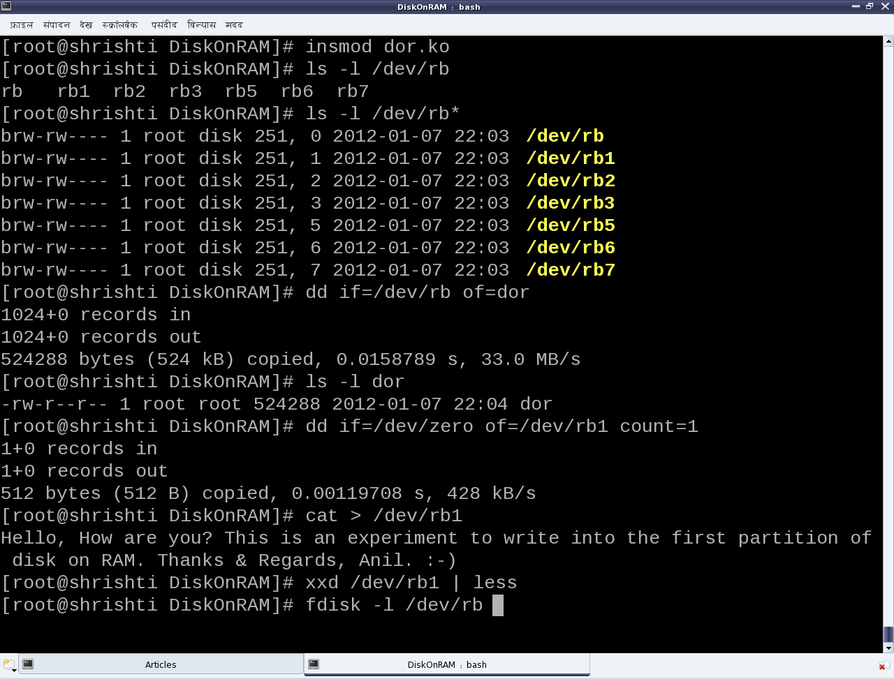
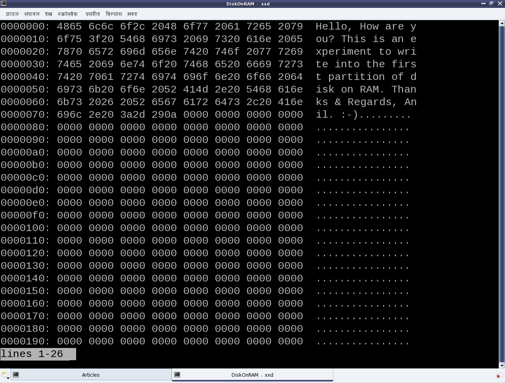

Disk on RAM: Playing destructively
This fifteenth article, which is part of the series on Linux device drivers, experiments with a dummy hard disk on RAM to demonstrate the block drivers.
Play first, rules later
After a delicious lunch, theory makes audience sleepy. So, let’s start with the code itself. Code demonstrated is available at dor_code.tar.bz2. This tar ball contains 3 ‘C’ source files, 2 ‘C’ headers, and a Makefile. As usual, executing make will build the ‘disk on ram’ driver (dor.ko) – this time combining the 3 ‘C’ files. Check out the Makefile to see how. make clean would do the usual clean of the built stuff.
Once built, the following are the experimenting steps (Refer to Figures 25, 26, 27):
- Load the driver dor.ko using insmod. This would create the block device files representing the disk on 512 KibiBytes (KiB) of RAM, with 3 primary and 3 logical partitions.
- Checkout the automatically created block device files (/dev/rb*). /dev/rb is the entire disk of 512 KiB size. rb1, rb2, rb3 are the primary partitions with rb2 being the extended partition and containing the 3 logical partitions rb5, rb6, rb7.
- Read the entire disk (/dev/rb) using the disk dump utility dd.
- Zero out the first sector of the disk’s first partition (/dev/rb1) again using dd.
- Write some text into the disk’s first partition (/dev/rb1) using cat.
- Display the initial contents of the first partition (/dev/rb1) using the xxd utility. See Figure 26 for the xxd output.
- Display the partition info for the disk using fdisk. See Figure 27 for the fdisk output.
- (Quick) Format the third primary partition (/dev/rb3) as vfat filesystem (like your pen drive), using mkfs.vfat (Figure 27).
- Mount the newly formatted partition using mount, say at /mnt (Figure 27).
- Disk usage utility df would now show this partition mounted at /mnt (Figure 27). You may go ahead and store your files there. But, please remember that these partitions are all on a disk on RAM, and so non-persistent. Hence,
- Unloading the driver using ‘rmmod dor‘ would vanish everything. Though the partition needs to be unmounted using ‘umount /mnt‘ before doing that.
Please note that all the above experimenting steps need to be executed with root privileges.



Now, let’s learn the rules
We have just now played around with the disk on RAM but without actually knowing the rules, i.e. the internal details of the game. So, let’s dig into the nitty-gritties to decode the rules. Each of the three .c files represent a specific part of the driver. ram_device.c and ram_device.h abstract the underlying RAM operations like vmalloc/vfree, memcpy, etc, providing disk operation APIs like init/cleanup, read/write, etc. partition.c and partition.h provide the functionality to emulate the various partition tables on the disk on RAM. Recall the pre-lunch session (i.e. the previous article) to understand the details of partitioning. The code in this is responsible for the partition information like number, type, size, etc that is shown up on the disk on RAM using fdisk. ram_block.c is the core block driver implementation exposing the disk on RAM as the block device files (/dev/rb) to the user-space. In other words, the four files ram_device. and partition.* form the horizontal layer of the device driver and ram_block.c forms the vertical (block) layer of the device driver. So, let’s understand that in detail.
The block driver basics
Conceptually, the block drivers are very similar to character drivers, especially with regards to the following:
- Usage of device files
- Major and minor numbers
- Device file operations
- Concept of device registration
So, if one already knows character driver implementations, it would be similar to understand the block drivers. Though, they are definitely not identical. The key differences could be listed out as follows:
- Abstraction for block-oriented versus byte-oriented devices
- Block drivers are designed to be used by I/O schedulers, for optimal performance. Compare that with character drivers to be used by VFS.
- Block drivers are designed to be integrated with the Linux’ buffer cache mechanism for efficient data access. Character drivers are pass-through drivers, accessing the hardware directly.
And these trigger the implementation differences. Let’s analyze the key code snippets from ram_block.c, starting at the driver’s constructor rb_init().
First step is to register for a 8-bit (block) major number. And registering for that implicitly means registering for all the 256 8-bit minor numbers associated with that. The function for that is:
int register_blkdev(unsigned int major, const char *name);
major is the major number to be registered. name is a registration label displayed under the kernel window /proc/devices. Interestingly, register_blkdev() tries to allocate & register a freely available major number, when 0 is passed for its first parameter major; and on success, the allocated major number is returned. The corresponding deregistration function is:
void unregister_blkdev(unsigned int major, const char *name);
Both are prototyped in <linux/fs.h>
Second step is to provide the device file operations, through the struct block_device_operations (prototyped in <linux/blkdev.h>) for the registered major number device files. However, these operations are too few compared to the character device file operations, and mostly insignificant. To elaborate, there are no operations even to read and write. That’s surprising. But as we already know that the block drivers need to integrate with the I/O schedulers, the read-write implementation is achieved through something called request queues. So, along with providing the device file operations, the following needs to provided:
- Request queue for queuing the read/write requests
- Spin lock associated with the request queue for its concurrent access protection
- Request function to process the requests queued in the request queue
Also, there is no separate interface for block device file creations, so the following are also provided:
- Device file name prefix, commonly referred as disk_name (“rb” in the dor driver)
- Starting minor number for the device files, commonly referred as the first_minor
Finally, two block device-specific things are also provided along with the above, namely:
- Maximum number of partitions supported for this block device, by specifying the total minors
- Underlying device size in units of 512-byte sectors, for the logical block access abstraction
All these are registered through the struct gendisk using the function:
void add_disk(struct gendisk *disk);
The corresponding delete function is:
void del_gendisk(struct gendisk *disk);
Prior to add_disk(), the various fields of struct gendisk need to be initialized, either directly or using various macros/functions like set_capacity(). major, first_minor, fops, queue, disk_name are the minimal fields to be initialized directly. And even before the initialization of these fields, the struct gendisk needs to be allocated using the function:
struct gendisk *alloc_disk(int minors);
where minors is the total number of partitions supported for this disk. And the corresponding inverse function would be:
void put_disk(struct gendisk *disk);
All these are prototyped in <linux/genhd.h>.
Request queue and its request processing function
The request queue also needs to be initialized and set up into the struct gendisk, before the add_disk(). The request queue is initialized by calling:
struct request_queue *blk_init_queue(request_fn_proc *, spinlock_t *);
providing the request processing function and the initialized concurrency protection spinlock, as its parameters. The corresponding queue cleanup function is:
void blk_cleanup_queue(struct request_queue *);
The request (processing) function should be defined with the following prototype:
void request_fn(struct request_queue *q);
And it should be coded to fetch a request from its parameter q, say using
struct request *blk_fetch_request(struct request_queue *q);
and then either process it or initiate the processing. Whatever it does, it should be non-blocking, as this request function is called from a non-process context, and also after taking the queue’s spinlock. So, moreover only the functions not releasing or taking the queue’s spinlock should be used within the request function.
A typical request processing as demonstrated by the function rb_request() in ram_block.c is:
while ((req = blk_fetch_request(q)) != NULL) /* Fetching a request */
{
/* Processing the request: the actual data transfer */
ret = rb_transfer(req); /* Our custom function */
/* Informing that the request has been processed with return of ret */
__blk_end_request_all(req, ret);
}
Request and its processing
rb_transfer() is our key function, which parses a struct request and accordingly does the actual data transfer. The struct request mainly contains the direction of data transfer, starting sector for the data transfer, total number of sectors for the data transfer, and the scatter-gather buffer for data transfer. The various macros to extract these information from the struct request are as follows:
rq_data_dir(req); /* Operation: 0 - read from device; otherwise - write to device */
blk_req_pos(req); /* Starting sector to process */
blk_req_sectors(req); /* Total sectors to process */
rq_for_each_segment(bv, req, iter) /* Iterator to extract individual buffers */
rq_for_each_segment() is the special one which iterates over the struct request (req) using iter, and extracting the individual buffer information into the struct bio_vec (bv: basic input/output vector) on each iteration. And, then on each extraction, the appropriate data transfer is done, based on the operation type, invoking one of the following APIs from ram_device.c:
void ramdevice_write(sector_t sector_off, u8 *buffer, unsigned int sectors);
void ramdevice_read(sector_t sector_off, u8 *buffer, unsigned int sectors);
Check out the complete code of rb_transfer() in ram_block.c
Summing up
“With that, we have actually learnt the beautiful block drivers by traversing through the design of a hard disk, and playing around with partitioning, formatting, and various other raw operations on a hard disk. Thanks for your patient listening. Now, the session is open for questions. Or, you may post your queries as comments, below.”